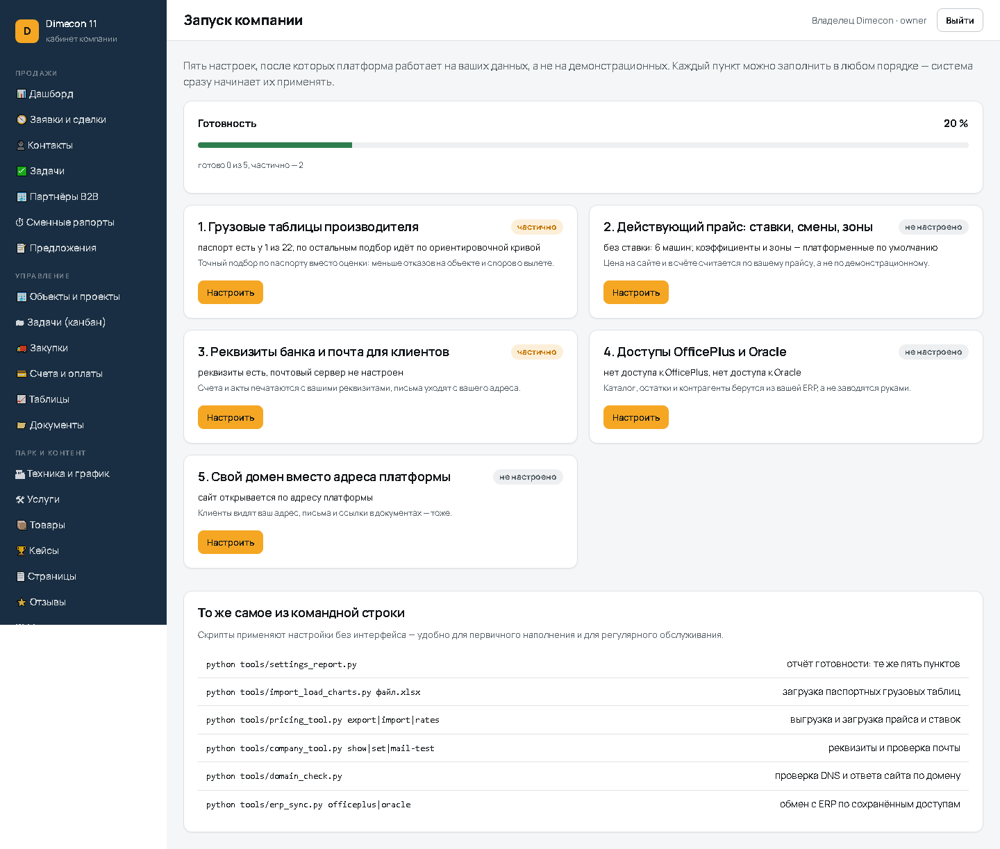
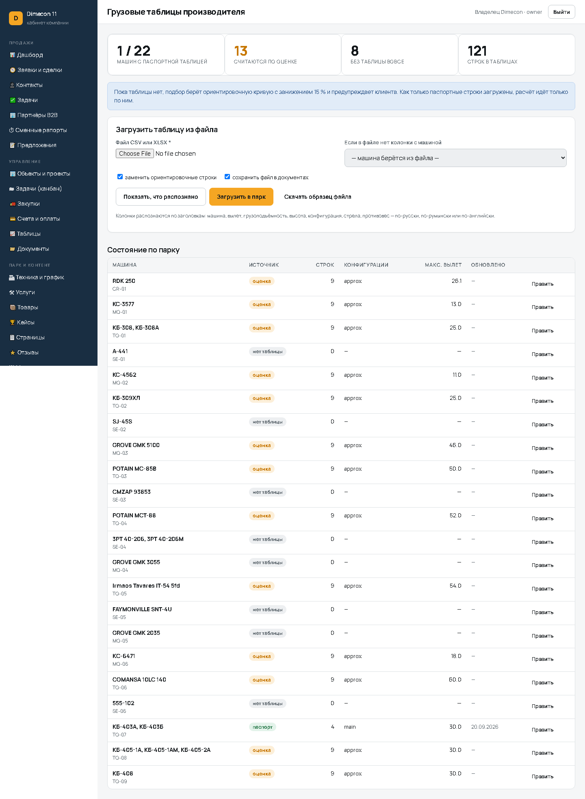
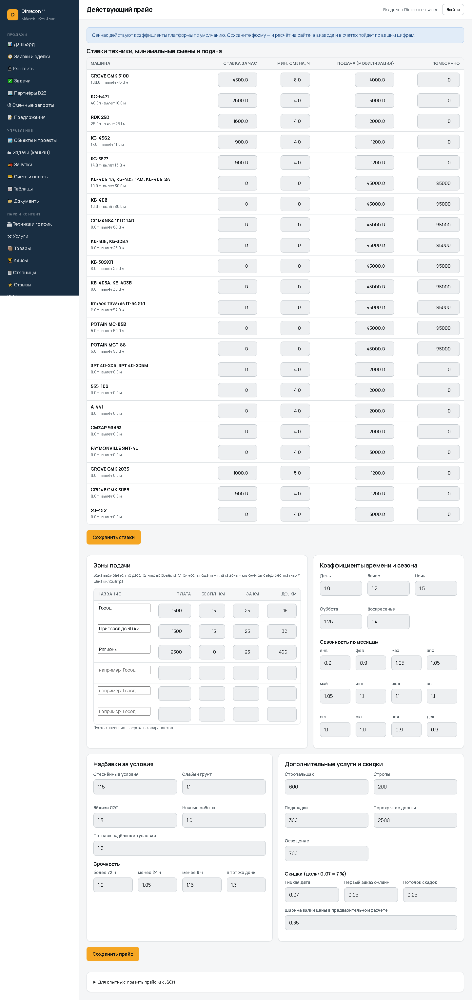
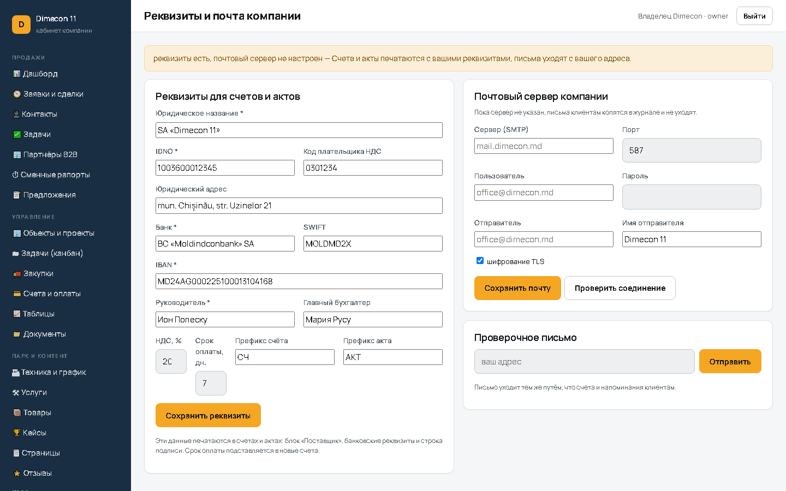
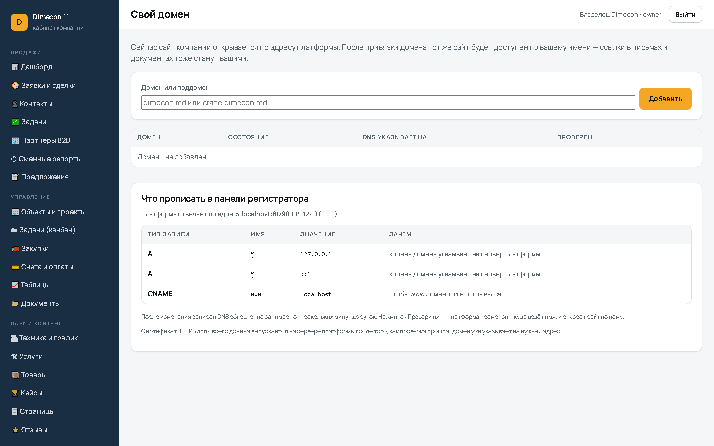

Пять пунктов из списка «что дальше» настраиваются в кабинете, и система сразу начинает по ним работать.
Годен
| Результат | Проверка | Фактически |
|---|---|---|
| ✔ OK | сводка «Запуск компании»: /setup | HTTP 200 |
| ✔ OK | грузовые таблицы: /setup/load-charts | HTTP 200 |
| ✔ OK | прайс и ставки: /setup/pricing | HTTP 200 |
| ✔ OK | реквизиты и почта: /setup/company | HTTP 200 |
| ✔ OK | свой домен: /setup/domain | HTTP 200 |
| ✔ OK | образец файла грузовой таблицы скачивается | 243 байт |
| Результат | Проверка | Фактически |
|---|---|---|
| ✔ OK | колонки файла распознаны по заголовкам | ['capacity', 'configuration', 'equipment', 'height', 'radius'] |
| ✔ OK | строки привязаны к машине парка | строк в файле: 4; распознано: 4 |
| ✔ OK | таблица прошла проверку на здравый смысл | |
| ✔ OK | растущая нагрузка на большом вылете помечается ошибкой | КБ-403А, КБ-403Б: на вылете 40 м указано 12 т — больше, чем 1.8 т на 3 |
| ✔ OK | паспортная таблица загружена и заменила ориентировочную | было passport (16 строк), стало паспорт (4) |
| ✔ OK | подбор считает по паспортной строке | вылет 16.0 м |
| ✔ OK | предупреждение об оценке снято для этой машины | |
| ✔ OK | по остальным машинам предупреждение осталось | 250 |
| ✔ OK | сводка по парку считает паспортные таблицы | паспорт у 1 из 22 |
| ✔ OK | загрузка файла через кабинет выполняется | HTTP 200 |
| Результат | Проверка | Фактически |
|---|---|---|
| ✔ OK | ставка и минимальная смена сохраняются | 1000.0 → 1100.0, мин. 5 ч |
| ✔ OK | зоны подачи сохранены формой | зон 3, первая плата 2000.0 |
| ✔ OK | коэффициенты времени и условий сохранены | |
| ✔ OK | цена допуслуги сохранена | |
| ✔ OK | зона для расстояния 10 км берётся из настроек | плата 2000.0 |
| ✔ OK | в расчёте подача считается по плате зоны из настроек | 2000 |
| ✔ OK | итог заказа меняется вслед за прайсом | 11600 → 12560 |
| ✔ OK | в сводке прайс отмечен как свой | без ставки: 6 машин |
| Результат | Проверка | Фактически |
|---|---|---|
| ✔ OK | реквизиты сохранены | BC «Moldindconbank» SA |
| ✔ OK | срок оплаты по умолчанию сохранён | 7 дней |
| ✔ OK | новый счёт получает срок оплаты из настроек | 2026-09-20 → 2026-09-27 |
| ✔ OK | номер счёта использует префикс из настроек | СЧ-2026-0019 |
| ✔ OK | IBAN печатается в счёте | |
| ✔ OK | подпись руководителя печатается в счёте | |
| ✔ OK | код плательщика НДС печатается в счёте | |
| ✔ OK | проверка почтового сервера отрабатывает без сбоя | |
| ✔ OK | проверочное письмо ставится в очередь или отправляется |
| Результат | Проверка | Фактически |
|---|---|---|
| ✔ OK | адрес приводится к чистому имени | crane.dimecon.md |
| ✔ OK | опечатки в домене отклоняются | |
| ✔ OK | домен добавлен | proverka-domena.dimecon.md |
| ✔ OK | для поддомена подсказывается запись CNAME | eminescu.md |
| ✔ OK | для корневого домена подсказывается запись A | |
| ✔ OK | непривязанный домен помечается неподтверждённым | имя отвечает (HTTP 200), но это не сайт компании — проверьте |
| ✔ OK | домен удаляется из кабинета |
| Результат | Проверка | Фактически |
|---|---|---|
| ✔ OK | settings_report.py печатает готовность компании | === Dimecon 11 (dimecon) — готовность 30 % === |
| ✔ OK | pricing_tool.py показывает прайс и ставки | |
| ✔ OK | pricing_tool.py выгружает ставки в CSV | |
| ✔ OK | pricing_tool.py без --apply только показывает изменения | |
| ✔ OK | company_tool.py показывает реквизиты | |
| ✔ OK | import_load_charts.py без --apply ничего не пишет | |
| ✔ OK | domain_check.py отрабатывает | |
| ✔ OK | erp_sync.py проверяет оба подключения | OfficePlus: доступ не настроен (кабинет → Интеграция CRM) |
| Результат | Проверка | Фактически |
|---|---|---|
| ✔ OK | чужой кабинет закрыт: /setup | HTTP 403 |
| ✔ OK | чужой кабинет закрыт: /setup/pricing | HTTP 403 |
| ✔ OK | чужой кабинет закрыт: /setup/company | HTTP 403 |
| ✔ OK | чужой кабинет закрыт: /setup/domain | HTTP 403 |
| ✔ OK | клиент не попадает в настройки компании | HTTP 403 |
| Результат | Проверка | Фактически |
|---|---|---|
| ✔ OK | прайс возвращён к исходному, чтобы прочие проверки считали те же суммы | |
| ✔ OK | ставка машины возвращена |





docs/*.log.
Испытания провёл: Claude (Claude Code), автоматизированный прогон.